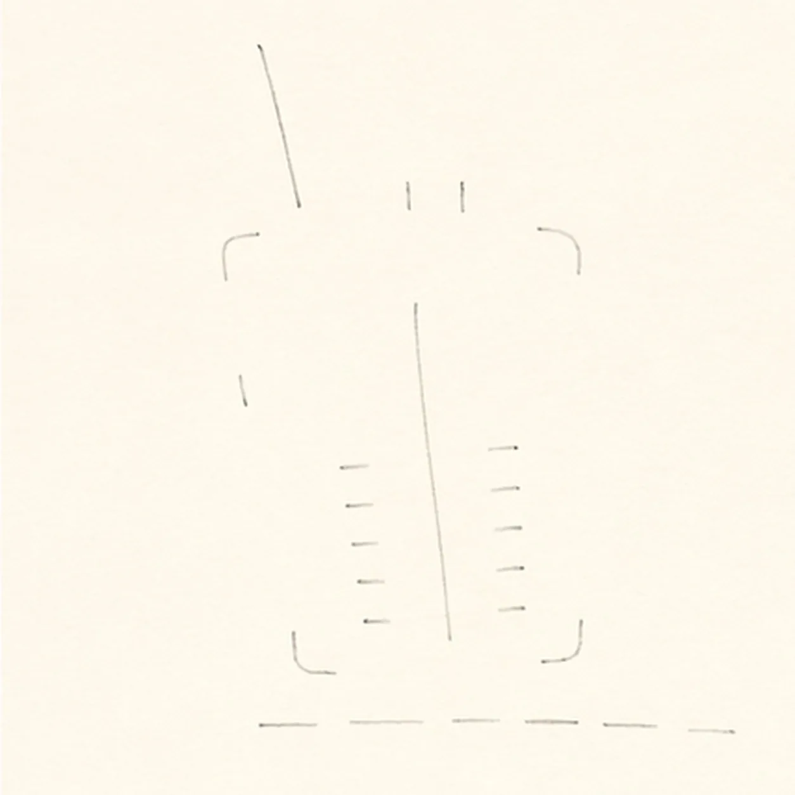
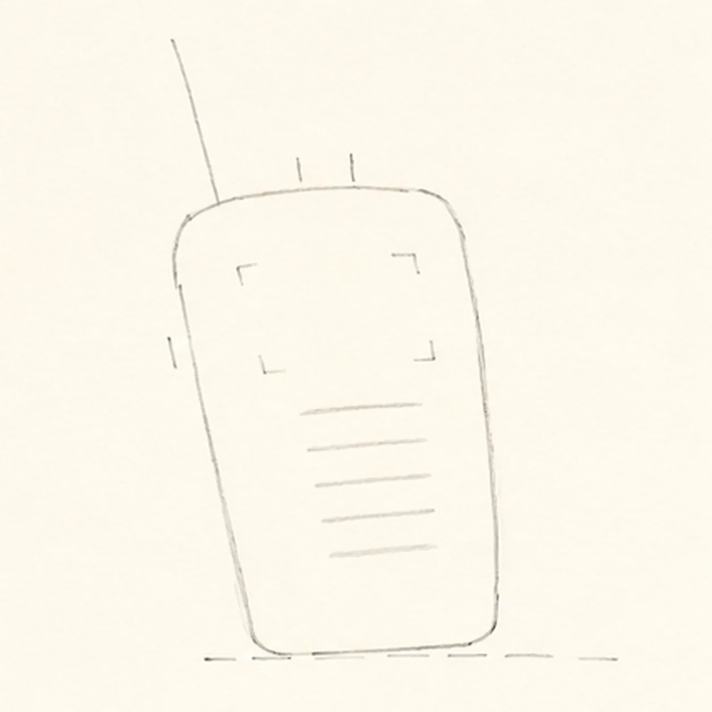
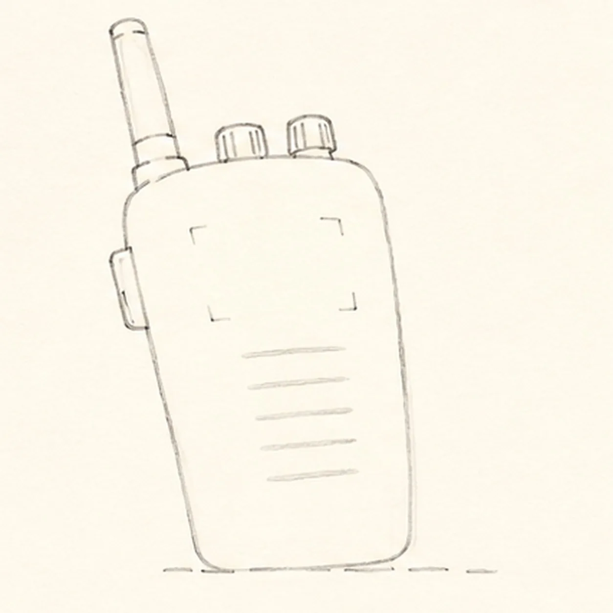
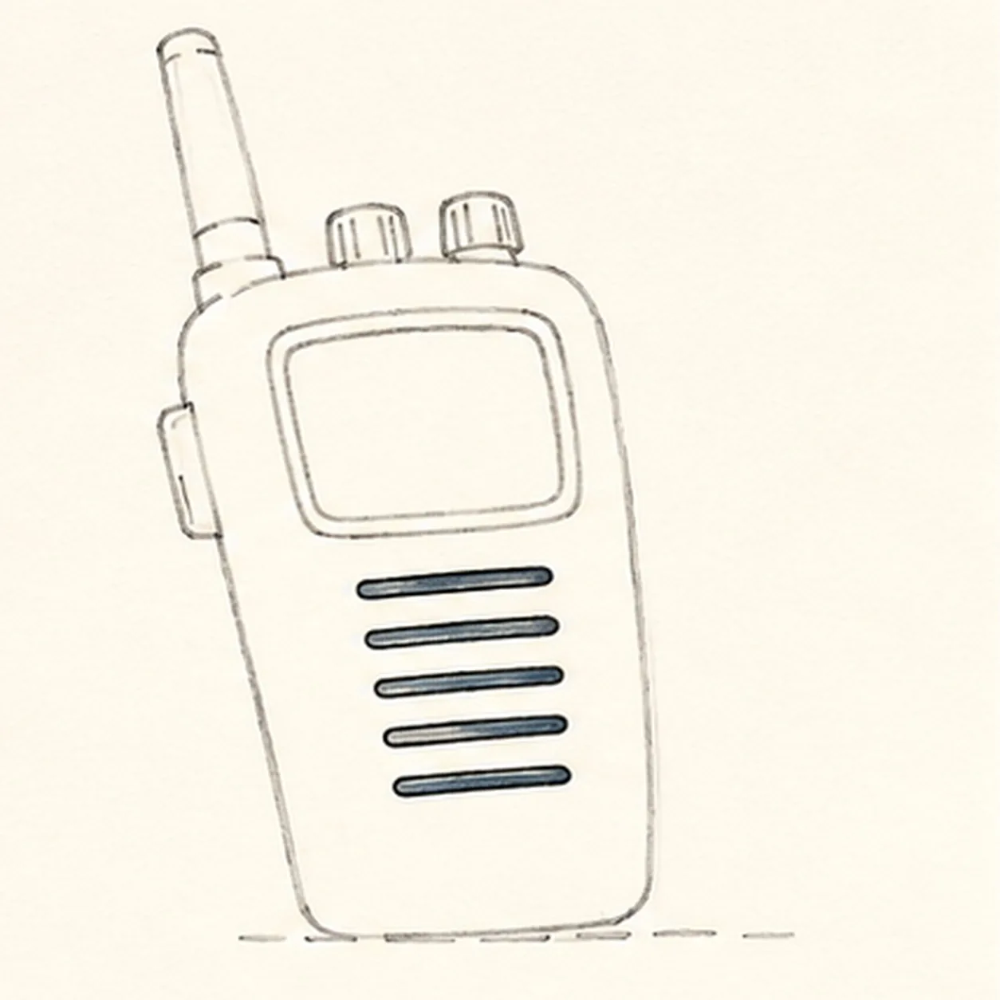
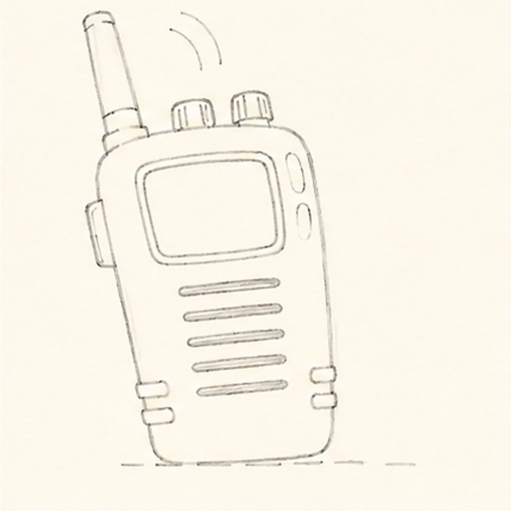
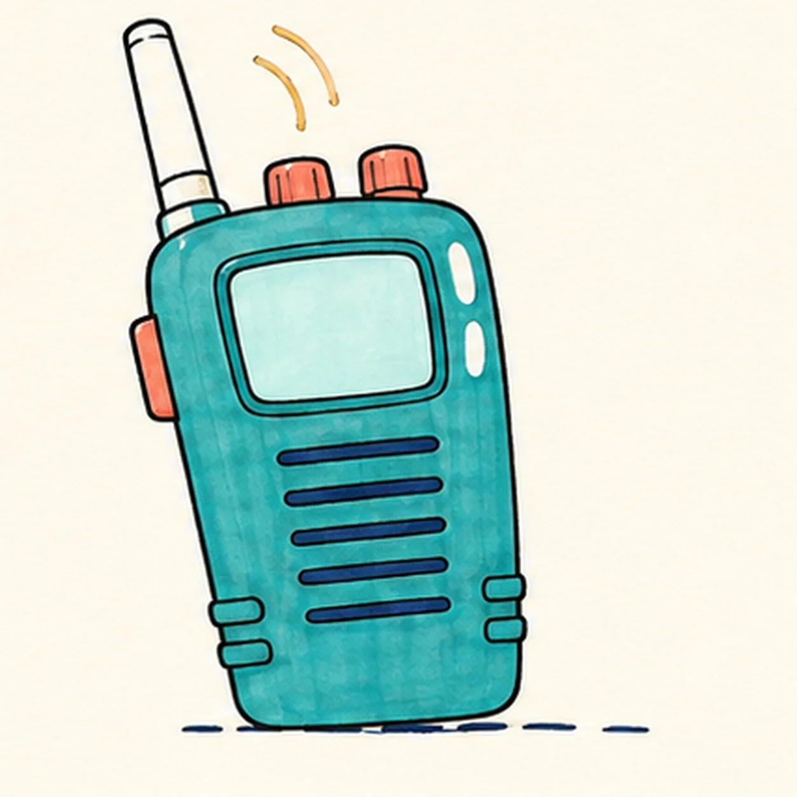
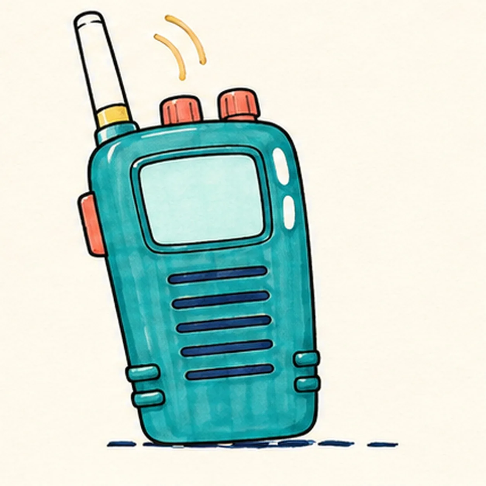

Felt-tip marker mode
Let's draw a walkie-talkie
Treat this as one playful practice round: sketch the idea loosely, simplify the shapes, then commit with confident marker outlines and bright fills.
-
01

Map the radio controls
Use pale pencil to place one open upright case envelope, one center axis, one antenna route, two top-knob ticks, one side-button tick, four screen corner marks, exactly five speaker placements, and one broken shadow route.
Marker tip: Keep the first frame sparse enough to copy in under two minutes. Leave the case, antenna, controls, and screen open instead of tracing finished contours.
-
02

Connect the radio case
Wrap the envelope into one rounded upright case with a slightly narrower top and gently tapered lower body, preserving every hardware, screen, speaker, and shadow placement mark.
Marker tip: Keep the slight right lean and lift the pencil around the top and side attachment ticks. Those gaps let the hardware connect without erasing a keeper line.
-
03

Add the antenna and controls
Wrap one antenna at the top-left, exactly two round top knobs, and one rectangular push-to-talk button at the upper-left side.
Marker tip: Seat every part directly on its reserved case anchor. Count both knobs and check that the side button touches the body instead of floating.
-
04

Build the screen and speaker
Turn the four corner marks into one blank rounded screen and bezel, then turn the five placements into exactly five horizontal speaker slots.
Marker tip: Leave the screen completely blank. Space the five slots as one centered stack and recount them before adding decorative details.
-
05

Add signal shine and grip
Draw exactly two radio-wave arcs outside the antenna, reserve exactly two open-paper case highlights, add exactly four lower grip ribs arranged two per side, and clarify the broken shadow.
Marker tip: Keep both signal arcs clear of the antenna tip. Pair the lower ribs on opposite sides so the case still reads as one simple shape.
-
06

Ink and map the radio colors
Ink only established contours and map teal, coral, yellow, pale aqua, and deep navy into every planned region.
Marker tip: Ink the five speaker slots and small controls first, then pull longer strokes down the case. Leave visible streaks and work around both highlights.
-
07

Pull the marker texture
Clarify only the established marker streaks, bezel and hardware depth, highlight edges, four grip ribs, five speaker slots, and broken shadow.
Marker tip: Use the darkest accents where the knobs, antenna, and side button meet the case. Keep the blank screen lighter and smooth enough to contrast with the textured body.
-
08
![Handmade felt-tip marker drawing of one face-free upright teal cartoon walkie-talkie leaning slightly right with one top-left antenna, exactly two coral top knobs, one attached coral push-to-talk button on the upper-left side, one blank pale-aqua rounded screen with a dark bezel, exactly five horizontal deep-navy speaker slots, exactly two yellow radio-wave arcs above the antenna, exactly two open-paper case highlights, exactly four lower grip ribs arranged two per side, thick imperfect black outlines, visible directional marker texture, and one broken deep-navy ground shadow](../assets/cartoon-walkie-talkie-finished-v1.webp)
Finish the cartoon walkie-talkie
Complete only the established marker fills and selectively strengthen the same case, antenna, controls, blank screen, five slots, two signal arcs, two highlights, four grip ribs, and shadow.
Marker tip: Count one device, one antenna, two knobs, one side button, five slots, two signal arcs, and four grip ribs, then stop before the handmade fills become flat and digital.
![Handmade felt-tip marker drawing of one seated warm-brown cartoon capybara with one long blunt muzzle, exactly two tiny high-set rounded ears, one wide oval left eye, one half-lidded right eye under one raised brow, one blunt dark nose, one crooked closed smile, exactly six whisker dots, exactly two short forelegs and two paws holding opposite upper sides of one bright-orange fruit, exactly two visible hind feet, one teal leaf, exactly three fur-tuft groups at the head cheek and rump, one open-paper body highlight, one open-paper fruit highlight, exactly four orange dimples, coral cheek and inner-ear accents, thick imperfect black outlines, visible directional marker texture, and one broken deep-navy ground shadow](../assets/cartoon-capybara-holding-an-orange-finished-v1.webp)
![Handmade felt-tip marker drawing of one face-free upright cartoon hourglass with exactly two rounded teal caps, exactly two attached coral side pillars, one pale-aqua pinched glass vessel, one curved upper golden-yellow sand bed, one centered falling sand stream, one rounded lower sand pile, exactly two open-paper glass highlights, exactly three yellow four-point sparkles, exactly four deep-navy cap notches, thick imperfect black outlines, visible directional marker texture, and one broken deep-navy ground shadow](../assets/cartoon-hourglass-with-flowing-sand-finished-v1.webp)